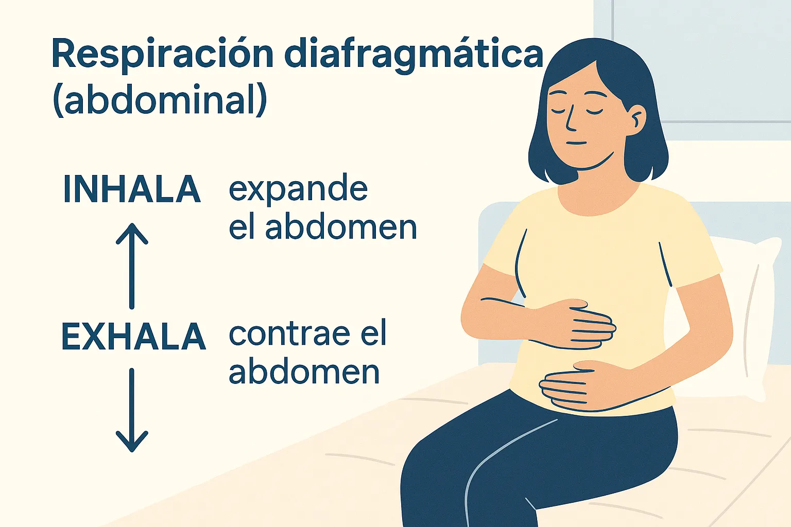
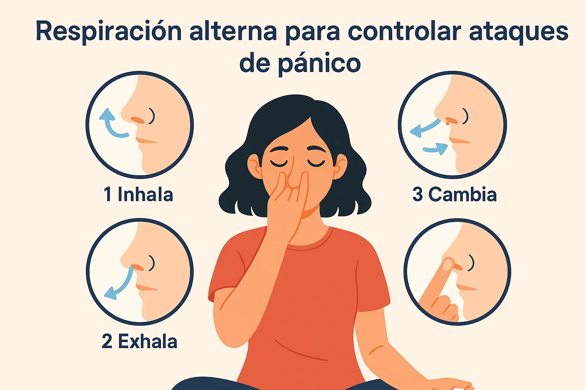

Técnicas de respiración para controlar ataques de pánico: recobra la calma paso a paso
Introducción: Cómo la respiración ayuda ante un ataque de pánico
Un ataque de pánico puede aparecer de forma inesperada: palpitaciones, falta de aire y miedo intenso. En esos momentos, saber aplicar técnicas de respiración para ataques de pánico es clave para calmar tu sistema nervioso y recuperar el control de tu mente y tu cuerpo.
Beneficios de las técnicas de respiración para ataques de pánico
Respirar de forma consciente reduce la frecuencia cardíaca, regula la oxigenación y devuelve la sensación de seguridad. Es un recurso natural, sin efectos secundarios y fácil de practicar.
Complementa estas prácticas con nuestra Guía de Técnicas de Respiración y la Rutina Corta para Reducir Ansiedad para reforzar tu bienestar diario.
3 técnicas de respiración para controlar ataques de pánico
1️⃣ Respiración diafragmática (abdominal)
Siéntate o recuéstate con una mano en el pecho y otra en el vientre. Inhala por la nariz lentamente, sintiendo cómo se expande tu abdomen. Exhala despacio por la boca. Repite varias veces hasta sentir calma.
2️⃣ Técnica 4-7-8 para calmar la mente
Inhala por la nariz durante 4 segundos, mantén el aire 7 segundos y exhala suavemente durante 8 segundos. Esta técnica activa el nervio vago, clave para relajar cuerpo y mente. Puedes practicarla sentado o acostado.

3️⃣ Respiración alterna (Nadi Shodhana)
Cierra la fosa nasal derecha con el pulgar, inhala por la izquierda. Cierra izquierda con el anular y exhala por la derecha. Repite alternando. Esta técnica de yoga equilibra tu sistema nervioso y calma la mente.
Errores comunes al usar técnicas de respiración para ataques de pánico
- Intentar respirar muy rápido o forzar respiraciones profundas.
- Practicar solo cuando ocurre el ataque, sin entrenamiento previo.
- Desesperarse si no funciona en segundos. La práctica constante es clave.
Cómo complementar estas técnicas para mayor efectividad
✅ Practícalas cada día, no solo durante crisis.
✅ Combínalas con meditación guiada para calmar pensamientos repetitivos.
✅ Integra Mindfulness Diario para reforzar tu capacidad de mantener la mente en el presente.
Preguntas frecuentes sobre respiración y ataques de pánico
¿Cuánto tarda en hacer efecto? 5 a 10 minutos continuos ayudan a reducir los síntomas.
¿Qué técnica es más sencilla? La diafragmática es ideal para principiantes.
¿Puedo poner música relajante? Sí, los sonidos suaves o audios de meditación ayudan mucho.
¿Es útil para niños o adolescentes? Sí, adaptándola a su nivel de comprensión.
¿Sustituye la terapia? No, son un complemento. Si los ataques se repiten, busca ayuda profesional.
Conclusión: Practícalas y recupera el control
Ahora tienes 3 técnicas de respiración para ataques de pánico fáciles de aplicar. Con práctica diaria, verás cómo tu cuerpo responde mejor y tu mente recupera la calma rápidamente.